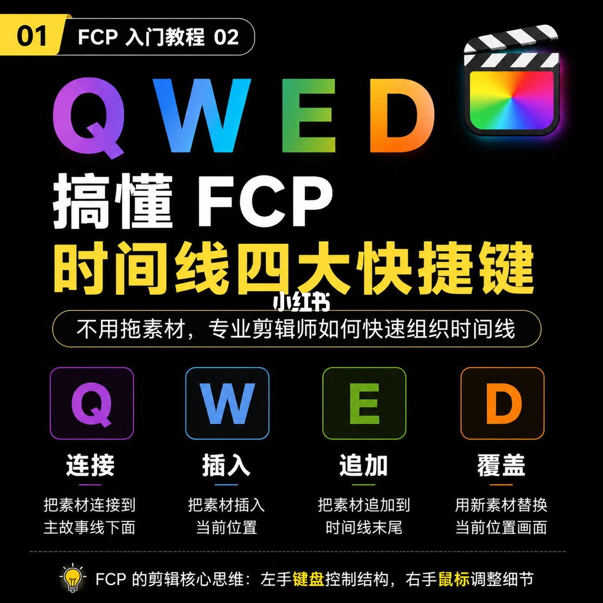
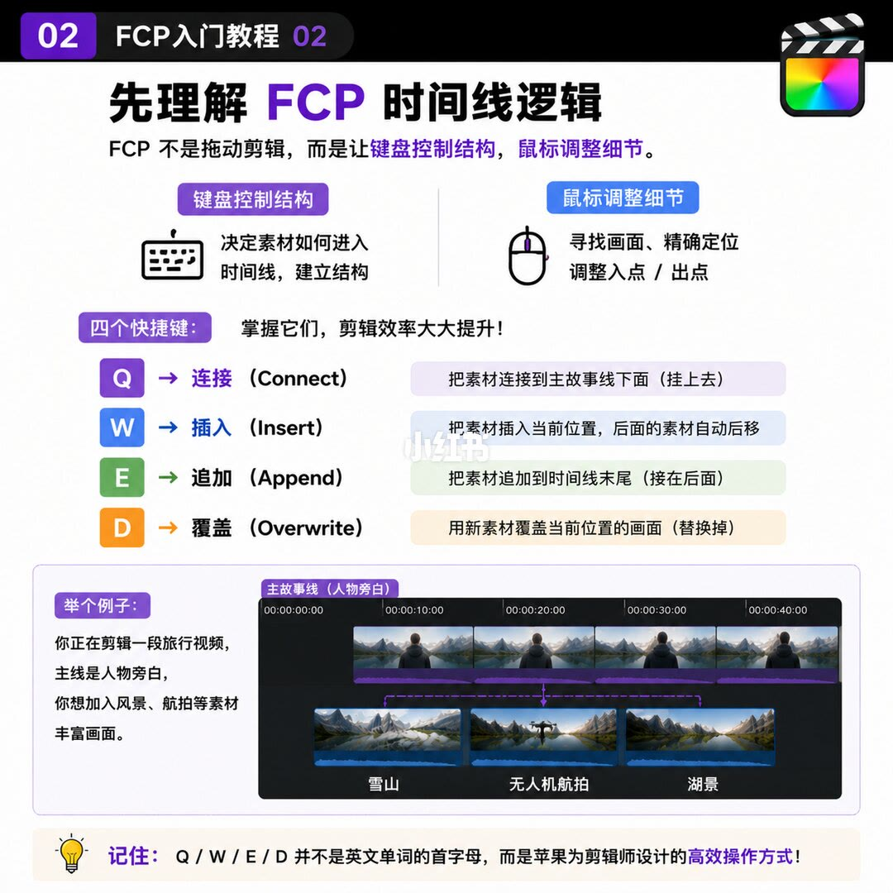
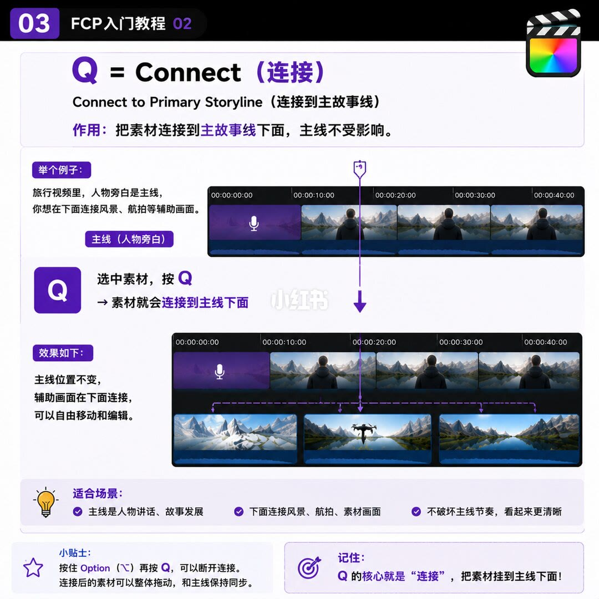
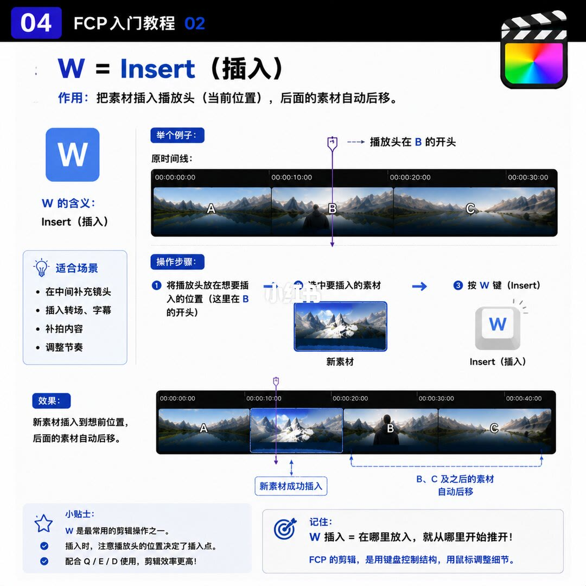
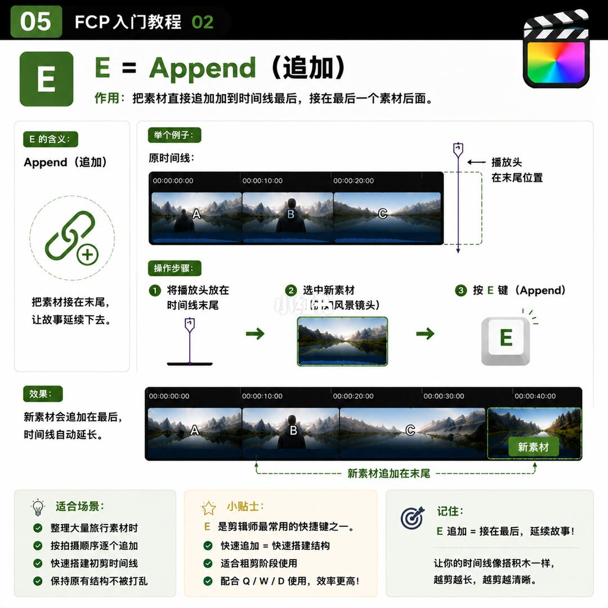
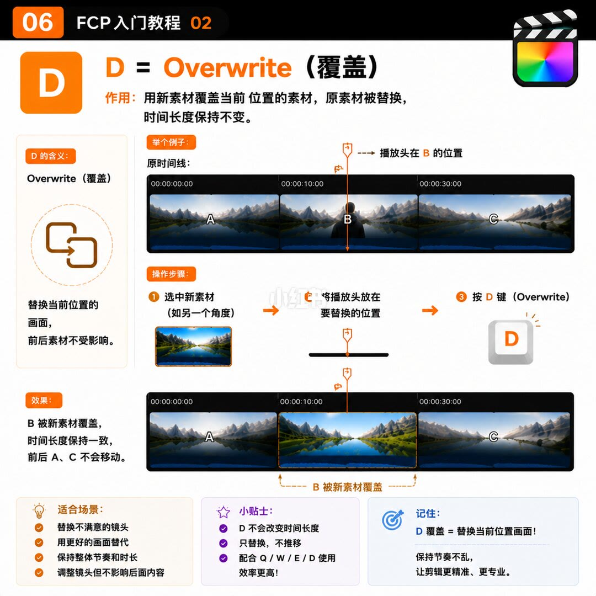
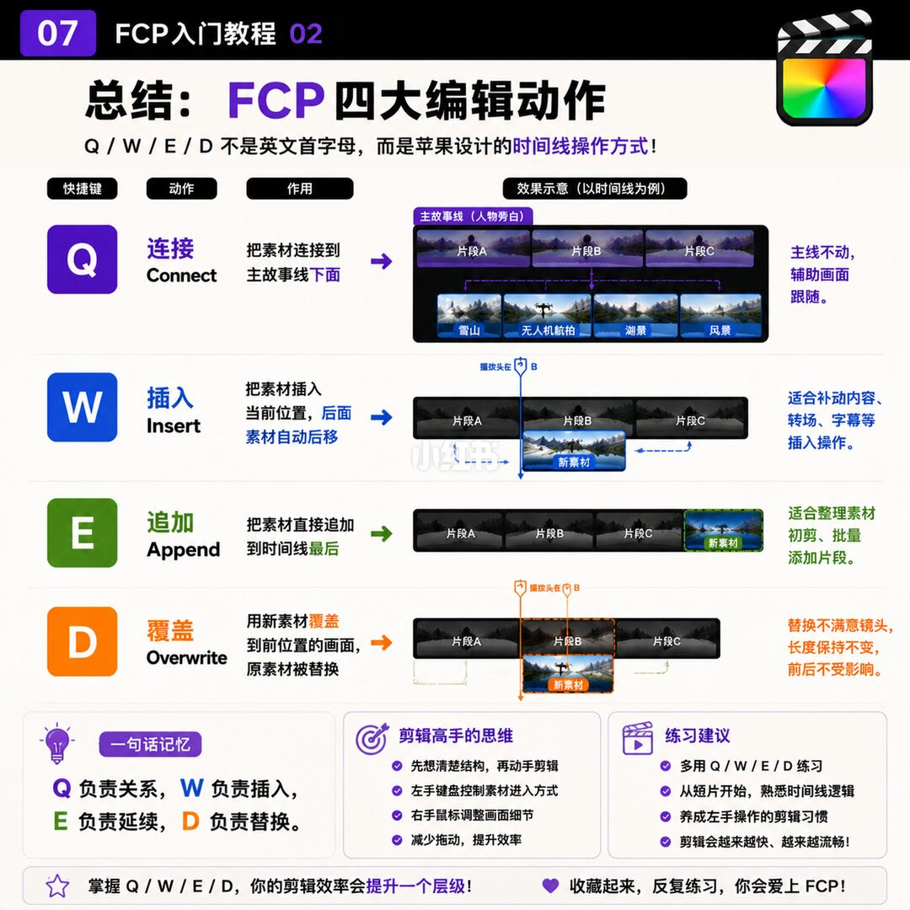

1/7
封面：四个键，四种进时间线的方式

左上角黄标是 01，旁边写「FCP 入门教程 02」。右上是 Final Cut Pro 的场记板图标。主标题是彩虹色的「Q W E D」，下面两行是「搞懂 FCP」和黄色的「时间线四大快捷键」。胶囊副题写着「不用拖素材，专业剪辑师如何快速组织时间线」。画面中部有浅淡的小红书水印。
中间四格按颜色分开。紫色 Q，连接，把素材连接到主故事线下面。蓝色 W，插入，把素材插入当前位置。绿色 E，追加，把素材追加到时间线末尾。橙色 D，覆盖，用新素材替换当前位置画面。这一页只给定义，没有前后时间线对照。
虚线下面一盏灯，核心思维是：「FCP 的剪辑核心思维：左手键盘控制结构，右手鼠标调整细节。」
2/7
先分清谁管结构，谁管细节

标题是「先理解 FCP 时间线逻辑」。核心句是：FCP 不是拖动剪辑，而是让键盘控制结构，鼠标调整细节。键盘决定素材怎样进入时间线、结构怎样立起来。鼠标负责找具体帧、精确对位、调整入点和出点。
四个键被说成给左手用的布局，不是英文单词首字母。Q 连接：把素材连接到主故事线下面，也就是挂上去。W 插入：把素材插入当前位置，后面的素材自动后移。E 追加：把素材追加到时间线末尾，接在后面。D 覆盖：用新素材覆盖当前位置的画面，替换掉。
举例是一条旅行视频。主故事线标成人物旁白，紫色条上有波形和人物缩略图，时间刻度从 00:00:00:00 到 00:00:40:00。主线下面连着三段：雪山、无人机航拍、湖景，箭头指向它们挂在旁白的哪些位置。灯下的收束是：记住，Q / W / E / D 并不是英文单词的首字母，而是苹果为剪辑师设计的高效操作方式。
3/7
Q：连到主线下面，主线不动

页码 03。标题是「Q = Connect（连接）」，并写 Connect to Primary Storyline，连接到主故事线。作用：把素材连接到主故事线下面，主线不受影响。
例子仍是旅行片，主线是人物讲述，图标是麦克风，旁边是主视频。操作写成：选中素材，按 Q，素材就会连接到主线下面。效果图里主故事线没有被推开，风景和航拍出现在下方轨道，用细的紫色竖线连回主线。图注说这些片段可以自由移动和剪辑，不挪动主故事线。
适合场景有三条：主线是人物说话或故事往前走；下面接风景、航拍或 B-roll；不打乱主线节奏，时间线看起来更清楚。
小贴士：按住 Option（⌥）再按 Q，可以断开连接。连接上的素材可以整段移动，并与主故事线保持同步。记住：Q 的核心是连接，把素材挂在主线下面。
4/7
W：从播放头把后面推开

页码 04，蓝色。标题「W = Insert（插入）」。作用：把素材插入播放头，也就是当前位置，后面的素材自动后移。左侧写 W 的含义是 Insert。适合场景四条：加在中间、插入转场或字幕、补拍、调整节奏。
原时间线是 A、B、C，紫色播放头正好在 B 的开头。步骤是：把播放头放到要插入的位置（B 的开头）；选中新素材；按 W。效果是 A、蓝色高亮的新素材、B、C。括号注明 B、C 及之后的素材自动后移。因为后面被推开，时间线总长度变长。
小贴士：W 是最常见的剪辑操作之一；播放头位置决定插在哪里；和 Q、E、D 一起用，效率更高。记住的口诀是：「W 插入 = 在哪里放入，就从哪里开始推开。」底下再次写：FCP 的剪辑，是用键盘控制结构，用鼠标调整细节。
5/7
E：接到最后一个素材后面

页码 05，绿色。标题「E = Append（追加）」。作用：把素材直接追加到时间线最后，接在最后一个素材后面。左侧图标是链条加号，说明是接在末尾，让故事继续。
原时间线仍是 A、B、C。播放头画在 C 的末尾，标注「播放头在末尾位置」。步骤写成三步：把播放头放在时间线末尾；选中新素材，例子是风景镜头；按 E。效果：新素材追加在最后，时间线自动延长，顺序变成 A、B、C、绿色描边的新素材。
适合场景：整理大量旅行素材；按拍摄顺序一条条追加；快速搭出最初的粗剪；原有结构不被打乱。小贴士：E 是剪辑师最常用的快捷键之一；快速追加等于快速搭结构；适合粗剪阶段；和 Q、W、D 一起用效率更高。记住：「E 追加 = 接在最后，延续故事。」类比是时间线像搭积木，越剪越长，越剪越清晰。
6/7
D：盖住当前位置，前后不挪

页码 06，橙色。标题「D = Overwrite（覆盖）」。作用：用新素材覆盖当前位置的素材，原素材被替换，时间长度保持不变。左侧说明：替换当前位置的画面，前后素材不受影响。效果摘要写着：B 被新素材覆盖，时间长度保持一致，前后 A、C 不会移动。
原时间线是 A、B、C，橙色播放头在 B 的位置，标注「播放头在 B 的位置」。步骤顺序和插入页不同：先选中新素材，例子是另一个角度；再把播放头放到要替换的位置；然后按 D。结果是 A、占着原来 B 那一格的新素材、C。图下写「B 被新素材覆盖」。A 和 C 在时间线上的位置没有动。
适合场景：换掉不满意的镜头；换成更好的素材；保住整体节奏和成片时长；改一个镜头，不影响后面内容的时间。小贴士：D 不改变时间线总长度；它只替换，不把别的片段推开；和 Q、W、E 一起用效率更高。记住：「D 覆盖 = 替换当前位置的画面。」下面一句是保持节奏不乱，让剪辑更精准、更专业。
7/7
四行对照，加一句怎么记

页码 07。标题「总结：FCP 四大编辑动作」。副题：Q / W / E / D 不是英文首字母，而是苹果设计的时间线操作方式。
对照表四行。Q 连接：素材连到主故事线下面；图是主线 A、B、C，紫色箭头向下，下面有雪山、无人机、湖、风景；要点是主线不动，辅助画面跟随。W 插入：插在当前播放头，后面的素材自动后移；图是播放头切进 B，蓝色新素材插进去，虚线箭头表示 B 和 C 右移；适合补内容、转场和字幕，会改变总长度。E 追加：直接接到时间线最末尾；图是绿色新素材紧接在 C 后面；适合整理初剪、成批加素材。D 覆盖：用新素材盖住播放头当前位置的画面，原素材被替换；图是橙色新素材放在 B 上，没有后移箭头；要点是换掉不满意的镜头，长度不变，前后不受影响。
底部三块。一句话记忆：Q 管关系，W 管插入，E 管延续，D 管替换。剪辑高手的思维：先想结构再动手；左手键盘管素材怎么进入；右手鼠标做微调；少拖拽，效率才上去。练习建议：经常练 Q、W、E、D；从短片开始理解时间线逻辑；把左手操作养成习惯。页脚左边是「掌握 Q/W/E/D，你的剪辑效率会提升一个层级」，右边是「收藏起来，反复练习，你会爱上 FCP」。
汇总
先选素材怎么进去，再动手
结论
这七页把剪辑收成一次选择：素材要挂在主故事线下面、插进播放头、接到末尾，还是盖住当前位置。Q 不推开主线，W 从播放头把后面推开并加长，E 只接到最后并加长，D 在笔记的示意图里替换当前这一格且总长不变。四个字母按键盘位置记，不按英文首字母记。左手负责这四种进入方式，右手负责找帧和入出点。
支撑页
- 第 1/7 页：四个中文名和一句左手结构、右手细节。
- 第 2/7 页：键盘与鼠标的分工，旅行片旁白主线，以及「不是英文首字母」。
- 第 3/7 页：Q 的前后图、三处适合场景，以及 ⌥Q 断开。
- 第 4/7 页：W 把 A、B、C 变成 A、新素材、B、C，总长变长。
- 第 5/7 页：E 把新素材接在 C 后面，并写成先把播放头放到末尾。
- 第 6/7 页：D 用新素材占满 B 的位置，A、C 不移动，总长不变。
- 第 7/7 页：四行对照、一句话记忆、少拖拽，以及从短片练左手。
边界
- 第 5 页把「播放头放在末尾」画成按 E 的第一步。图上没有播放头停在中间时按 E 的结果，不能从这一页推出「播放头不在末尾，E 就无效」。
- 第 6 页和第 7 页的覆盖图，都是新素材刚好占满原来的 B。笔记没有画新素材比 B 更短或更长时，盖住的范围到哪里。
- 连接在第 1、2、3、7 页都写在主故事线下面，示意图也画在下方。笔记没有说明这和软件默认时间线里连接片段的上下位置是否一致。
- 第 2 页例子是雪山、无人机航拍、湖景三段；第 7 页总结图是雪山、无人机、湖、风景四段。两页片段数量对不上，不能当成同一次操作。
- 第 4 页把转场和字幕算进 W 的适合场景，示意图只有 A、B、C 和新素材，没有字幕条或转场。⌥Q 断开只出现在第 3 页一句小贴士，没有断开前后的图。
- 「效率提升一个层级」是第 7 页的口号。七页里没有计时、没有同一条片子的拖拽对照。